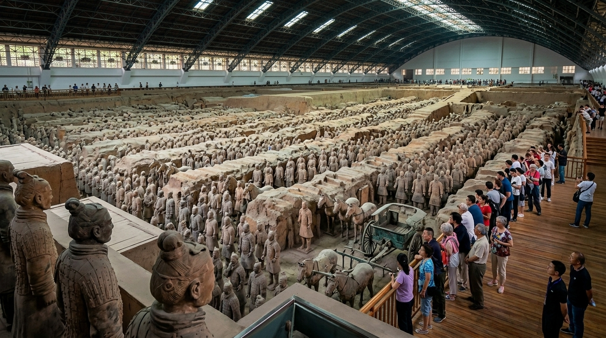
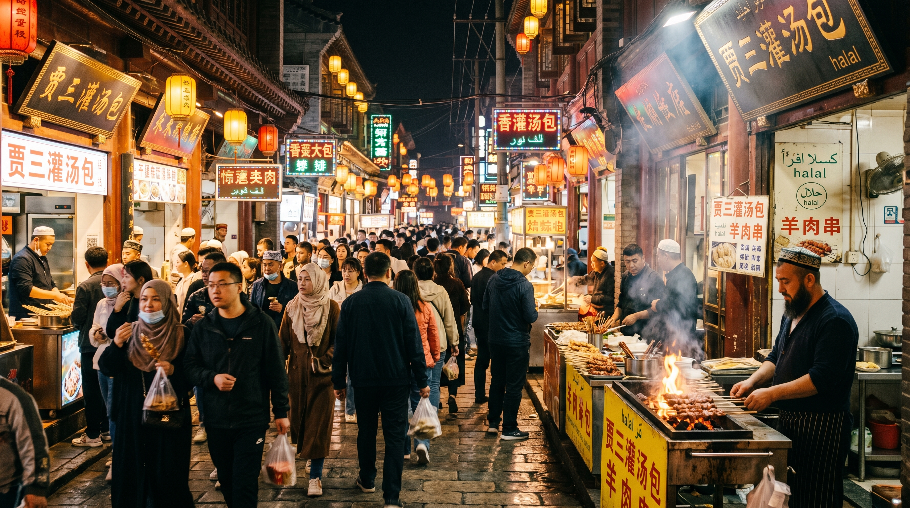
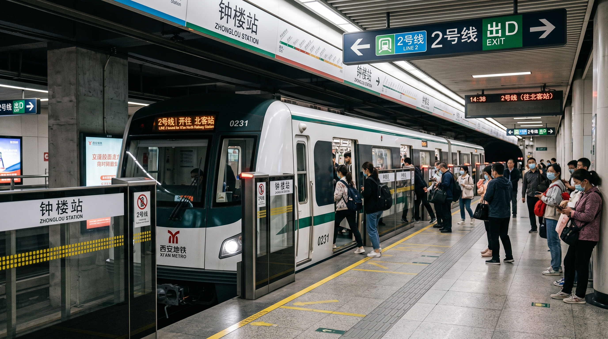
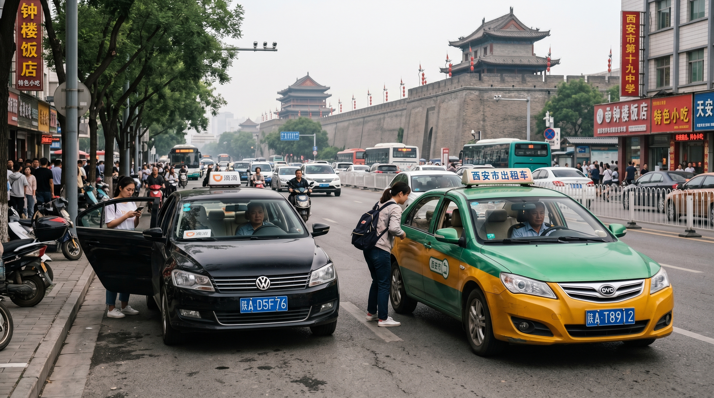
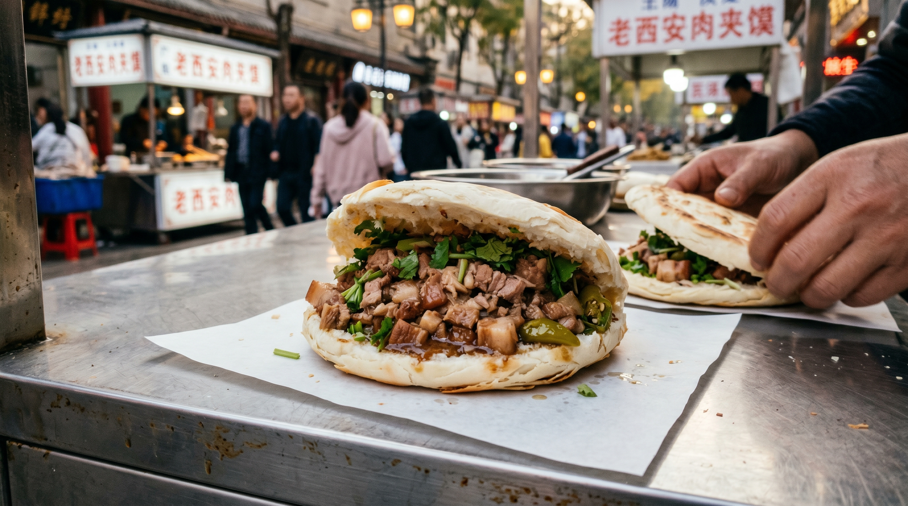
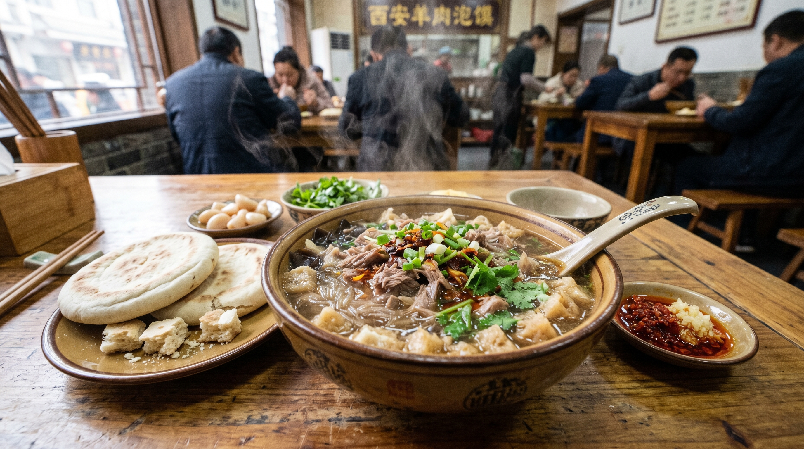
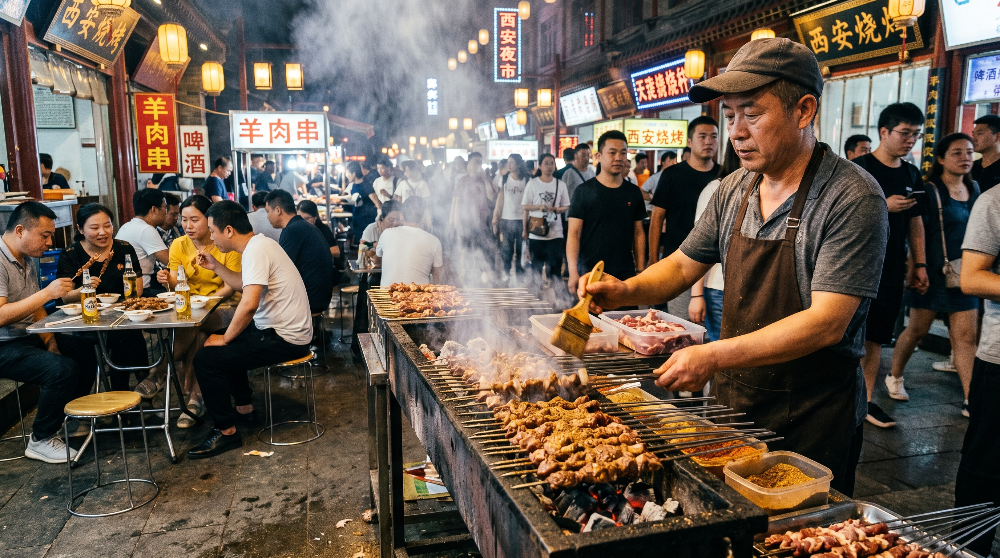

Quick Overview
Xi’an was the capital of 13 ancient Chinese dynasties, the starting point of the Silk Road, and home to the world-famous Terracotta Army. It perfectly combines history, culture, and delicious food.
Best travel season: March–June & September–November with cool and comfortable weather.
Xi’an Highlights Gallery
-

-

-

5-Day Detailed Xi’an Itinerary
📅 Day 1: Arrival & City Wall & Muslim Quarter
- 08:00–09:00 Check into hotel (near Bell Tower or City Wall)
- 10:00–11:30 Visit Bell Tower & Drum Tower
- 14:00–17:00 Walk or cycle on the Ancient City Wall (600 years old)
- 18:00–21:00 Muslim Quarter food tour: Roujiamo, lamb skewers, cold noodles
📅 Day 2: Terracotta Army (Full Day)
- 07:30 Leave hotel to avoid crowds
- 08:30–12:00 Visit Pit 1 → Pit 3 → Pit 2 (the best order)
- 12:00–13:00 Lunch nearby
- 14:00–15:30 Visit the museum & bronze chariots
- 16:00 Return to city center
📅 Day 3: Ancient Temples & Big Wild Goose Pagoda
- 09:00–11:30 Big Wild Goose Pagoda (Silk Road symbol)
- 12:00–13:30 Local lunch
- 14:30–16:30 Shaanxi History Museum (book 3 days early)
- 18:00–20:00 Tang Dynasty Show or night market
📅 Day 4: Mount Hua (or Hanyang Mausoleum)
- 07:00 Depart for Mount Hua (1.5h by high-speed train)
- 09:00–17:00 Hike or cable car at Mount Hua
- 18:00 Return to Xi’an
- Alternative: Hanyang Mausoleum for gentle historical tour
📅 Day 5: Shopping & Food & Departure
- 09:00–11:00 Yongxingfang Food Street
- 11:30–13:00 Last lunch: Biangbiang Noodles
- 14:00 Buy souvenirs
- 16:00 Head to airport / train station
Top Attractions & Booking Info
| Attraction | Ticket | Book Advance | Transport |
|---|---|---|---|
| Terracotta Army | ¥120 | 1–3 days | Metro Line 9 + Bus |
| Ancient City Wall | ¥54 | Same day | Walk from downtown |
| Shaanxi History Museum | Free | 3 days | Metro Line 2/3 |
| Big Wild Goose Pagoda | ¥40 | Same day | Metro Line 3 |
| Mount Hua | ¥160 | 1 day | High-speed train |
Accommodation Guide
Best Areas to Stay
- Bell Tower / Downtown
- City Wall South Gate
- Metro Line 2 stations
Tips for Foreign Tourists
- Choose hotels near subway
- Many hotels speak English
- Price is very affordable
- Near the Bell Tower: Situated in the city center, within walking distance of the Bell and Drum Towers and the Muslim Quarter. The area boasts a vibrant nightlife; however, it is advisable to avoid street-facing rooms to minimize noise.
- Near the Giant Wild Goose Pagoda: Located close to attractions such as the Grand Tang Dynasty Everbright City and the *Twelve Hours of Chang'an* cultural district, making it highly convenient to walk back to your accommodation after an evening outing.
Transportation in Xi’an


1. Metro (Best Choice)
- Cheap, fast, English signs available
- Line 2: Most attractions
- Line 9: Goes to Terracotta Army area
2. Taxis & Didi
- Very cheap for foreigners
- Didi is recommended
3. To Terracotta Army
- Metro Line 9 → Bus 613
- Direct tourist buses
Xi’an Food & Local Cuisine



🍜 Culinary Recommendations:
- 🌀1. Yangrou Paomo (Crumbled Flatbread in Lamb Broth), Biang Biang Noodles, and Marinated Jelly Noodles
- 🌀2. Chang'an Daipaidang: Authentic Shaanxi cuisine. Recommended dishes include Gourd Chicken, "Old-Style" Braised Three Delicacies, and Jingji Steamed Meat in Baskets.
- 🌀3. Shaanxi-style BBQ: Specialties include grilled *nang* bread (oil-brushed flatbread) and fried dough cakes. We suggest ordering the grilled chicken cartilage, beef, and beef tendons.
- 🌀4. Roujiamo (Shaanxi Meat Buns), Jinxian Youta (Golden Thread Pastry), Sesame Sauce Jelly Noodles, Handmade Spicy Strips, Zhengao (Steamed Rice Cake), Meatball Hu La Tang (Spicy Pepper Soup), and Baked Buns.
Essential Travel Tips for Foreigners
- 🏛️ Xi’an is very safe for solo travelers
- 🗿 Terracotta Army: arrive early to avoid huge crowds
- 🚶 Wear comfortable shoes for walking and hiking
- 🍜 Food is cheap and delicious – try street food
- 🚇 Metro is the best way to get around
- 📱 Use Didi for easy taxi rides
- 🆔 Always carry your passport